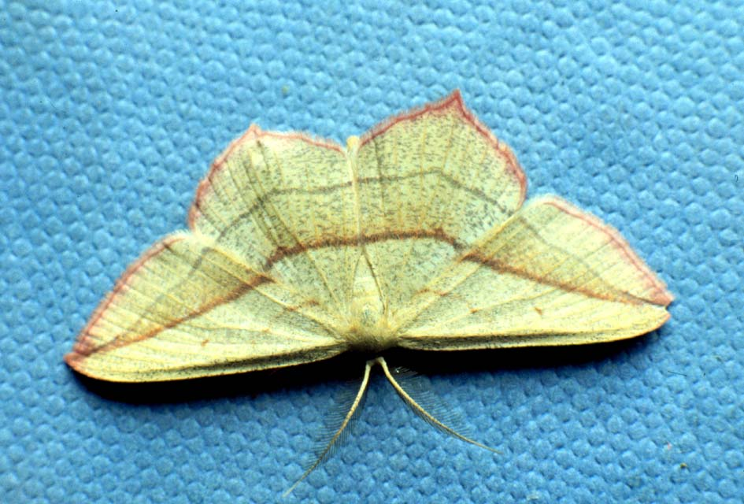

Skomer Moths
Lepidopterans, that is, moths and butterflies, are the only invertebrates that are regularly monitored on the island. This page will just give a brief overview of the main features of the moths recorded on the reserve. Butterflies are recorded by means of a transect, once a week, in accordance with methods set by the National Butterfly Monitoring Scheme. Moths mainly fly at night and so are recorded by means of heath and Robinson traps that are set up overnight and checked in the morning, when moths are counted and released by enthusiastic recorders. Nick Littlewood, the most dedicated moth trapper to have worked on the island (Assistant Warden 1997-1998), is pictured on the left with a Convulvulus Hawk-moth- and I am very grateful to Nick for providing the slides from which the pictures on this page are taken.
Some of the moths recorded are day flyers. These include Yellow Shell, the Five Spot Burnet, Hummingbird Hawk-moths (which are occasional visitors to the island) and the male Northern Eggar (the female of this species is pictured on the left with the Garden Tiger moth to its right). However, the majority of moths fly at night. To date, a total of 342 species of lepidoptera have been recorded on Skomer: 88 micro-moths, 22 butterflies and 232 macro-moths (data courtesy of Nick Littlewood). Data from each recorder are added to a card index system on the island which allows the accumulation of a considerable amount of information on the occurrence and distribution of all these species.
, Intensive recording on moths has only been undertaken on the island over the last four years, with the greatest effort in 1997/1998 as mentioned above. Each year new species have been recorded, such as Webb's Wainscot in 1997 by Nick. This species is a "Notable B" and a total of 19 were trapped over the period 1997/98, mainly by North Pond where their requisite plant species grows. Some species such as the blood vein (left, Timandra griseata), may only be visitors to the island, although foodplants for this species do grow on the reserve. Some of the migrant species, such as the Dark Sword-grass (Agrotis ipsilon), may have travelled from as far as mainland Europe. However, a great many, such as the Lime Speck Pug (Eupithecia centaureata) and Crescent Dart (Agrotis trux lunigera) are common and are known to breed on the island.
Frequently species are known to be breeding residents by the records of their larvae. The emperor moth, for example, (Pavonia pavonia), have only sparse records but their presence is confirmed by three records of their impressive larvae (see left).
Further details of the records from this summer (1999) are available in a report by Jane Hayden.
There is also a systematic list of all the moth species trapped in 1998.
Once again I would like to extend my thanks to Nick Littlewood for his help in constructing this page.
Back to main page